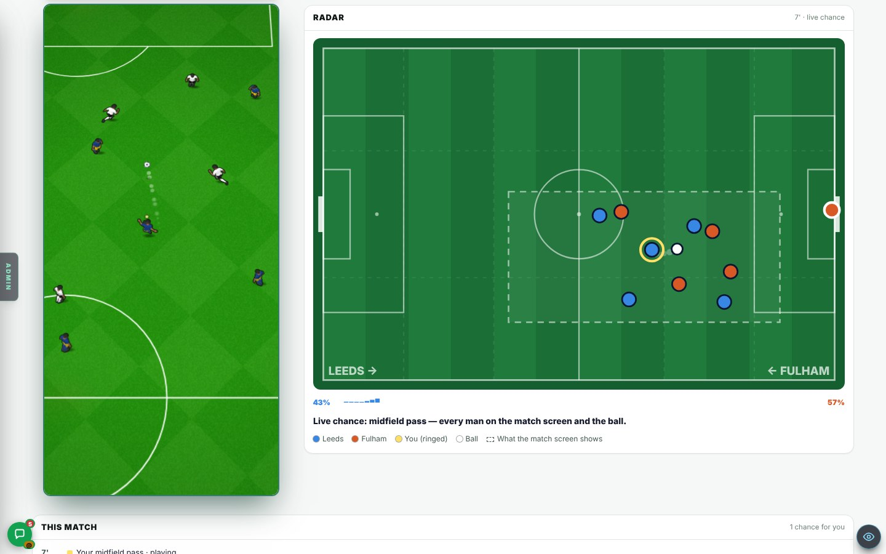
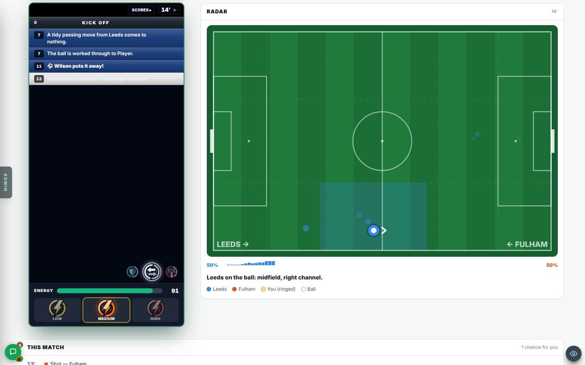
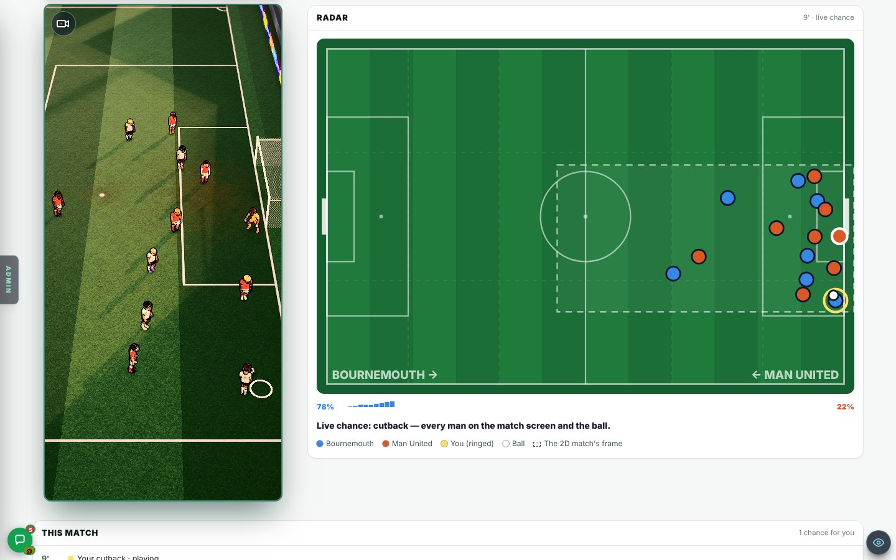
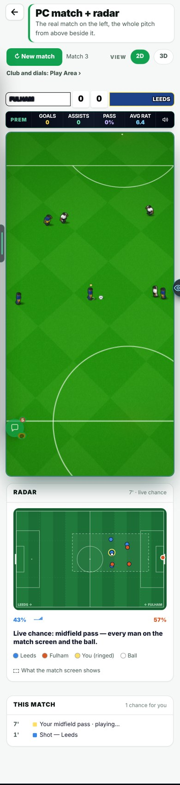

On the Harry branch, not live yet.
Overnight round, 20 Oct 2026. A test page: nothing in the real game changed. In Admin → Patch notes this is v0.85.
Harry, 20 Oct: you wanted a PC match layout like the five-a-side test area, with the pitch and a live radar side by side. “The way the ball’s moving across the pitch is very cool.” You asked for a test area first, in 3D if possible.
The real match shows only a small piece of the pitch. On a computer there is room beside it for the whole pitch.
A new test page, PC match + radar (Test pages → Match tests). On a computer the real 90-minute match sits on the left at its real size (384 px). A live radar sits on the right, pinned to the top. At 1440 × 900 the whole pitch and the radar fit on screen. Under the radar: a momentum bar, one line of status, and a “This match” list (goals, shots, corners, your chances and how each ended). The bar above has New match, View 2D | 3D and a link to the Play Area for the club and dials. It always plays 90 minutes.


Look for: the radar following the match. The men and the ball on the radar move with the men on the pitch. The clip is 8 seconds long, on a computer.
On a computer there was no big picture of the match between your chances.
The match already tracks the ball area by area, in its own small commentary radar. Nothing drew that big.
The ball is a dot that glides from area to area and leaves a trail. The area it is in is lit in that side’s colour. GOAL!, SHOT, CORNER and YOUR CHANCE flash. The data comes from the match’s own small radar, read only. The real match is not changed, and no real match shows any of this.
Measured over 5 matches, 455 minutes in all.
When you take a chance, the match screen shows only the men near the ball.
The match screen is zoomed in on the chance.
The radar draws every man, both keepers and the ball where the match screen just drew them. A dashed box shows the part of the pitch the match screen can see. In a dribble the radar holds the last minute and says so.
You asked for it in 3D if possible.
The career already has a 3D match picture (Match view 3D).
The View 2D | 3D switch above the match uses that picture. It changes this page only. It took about 12 s to load on the test machine, which has no graphics chip.

A phone has no room beside the match.
A phone screen is 390 px wide.
The radar folds under the match. The pitch is 366 px wide, the same as the real match.

In a real career match, with Settings → Match radar set to New, the ball dot was outside the area the radar lights in 220 of 455 minutes. In 50 of those it was off the pitch.
The radar’s position shuffle could go below zero.
This page found it. Harry, 20 Oct: “fix the match radar”. It was fixed the same day with a one-line change, so the shuffle can no longer go below zero. The dot is now outside its lit area 0 of 910 minutes checked.
Minutes with the dot outside its lit area, before → after the fix.
Two things were not looked at on the page: what the radar and list show at full time, and a penalty against you.
The check ran about 6 minutes over several matches.
Play one match to the end and look.
The page was seen at 1440 × 900 and 390 × 844 in a test browser. Not on a real phone.
The test machine has no graphics chip. The 3D view took about 12 s there.
Open the page on your phone and your computer, and say if it feels smooth.
How well the dot matches the named area. The PC match page: inside the area 455 of 455 minutes over 5 matches. The career radar (Settings → Match radar: New) before the fix: outside its lit area 220 of 455 minutes, 50 of them off the pitch. After the fix: 0 of 910 minutes checked.
Sizes. The real match on the left: 384 px wide on a computer, 366 px on a phone. At 1440 × 900 the whole pitch and radar fit.
What was checked. About 6 minutes over several matches at both sizes. 3 chances checked by eye. The 3D view. The dribble hold. No file the red warning guards was edited.
The radar following a chance. 8 seconds, on a computer. It is under “A test page” above.